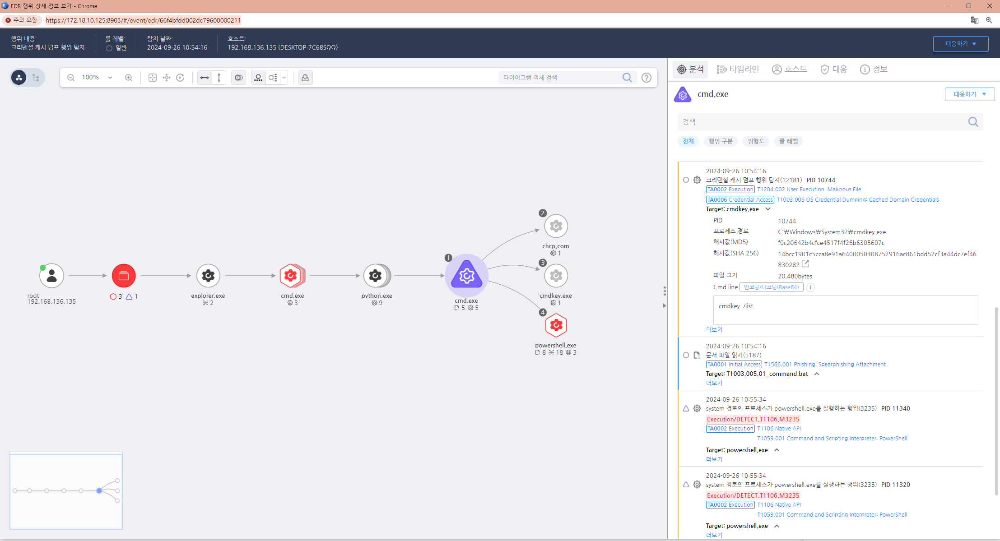

MITRE ATT&CK 액션을 기준으로 대응 방안을 작성
cmdline =(contains) "cmdkey" AND "/list"

노출된 계정의 권한을 변경합니다. 노출된 계정의 비밀번호를 변경합니다. 공격자에 의해 PC가 제어되었을 가능성이 있으므로 호스트 네트워크를 격리합니다. 공격자 C&C 서버로 추정되는 주소를 차단합니다.
Windows에서 로컬 컴퓨터에 캐시된 도메인 자격 증명의 수를 제한하거나 저장을 비활성화할 수 있습니다. 이를 통해 공격자가 캐시된 자격 증명을 덤프하더라도 사용할 수 없도록 설정할 수 있습니다. 방법:
로컬 그룹 정책 편집기(Local Group Policy Editor) → Computer Configuration → Windows Settings → Security Settings → Local Policies → Security Options에서 "Interactive logon: Number of previous logons to cache (in case domain controller is not available)" 설정을 0으로 변경하여 캐시를 비활성화합니다.
LSA(Local Security Authority) 보호 기능을 활성화하여, 악성 코드가 메모리에서 자격 증명을 덤프하는 것을 방지할 수 있습니다. LSA 보호를 활성화하면, 인증과 관련된 프로세스가 메모리 덤프를 통해 접근되지 않도록 보호됩니다. 방법:
레지스트리 편집기에서 HKEYLOCALMACHINE\SYSTEM\CurrentControlSet\Control\Lsa 경로에 RunAsPPL 값을 DWORD로 추가하고, 값을 1로 설정하여 LSA 보호를 활성화합니다.
최신 안티멀웨어 및 엔드포인트 탐지 및 대응(EDR) 솔루션을 사용하여 캐시된 자격 증명 덤핑과 같은 악성 활동을 실시간으로 탐지하고 차단합니다. 이러한 솔루션은 시스템 메모리와 LSA에서 의심스러운 접근을 모니터링하고 대응할 수 있습니다.
관리자 계정이 아닌 표준 사용자 계정을 사용하여, 캐시된 자격 증명을 악용한 권한 상승을 방지합니다. 특히, 도메인 관리자 계정의 사용을 최소화하고, 일반 사용자가 관리 권한을 가진 시스템에 로그인하지 않도록 제한합니다. 도메인 관리자 계정으로 로컬 컴퓨터에 로그인하는 것을 최소화하여 캐시된 자격 증명이 덤핑될 수 있는 기회를 줄입니다.
공격자는 자격 증명을 덤핑하기 위해 메모리 덤프 도구(예: Mimikatz)를 사용합니다. 이러한 도구의 실행을 탐지하고 차단하는 보안 솔루션을 배치합니다. 시스템의 메모리를 자주 덤프하는 것은 비정상적인 행동이므로, 이를 모니터링하여 의심스러운 프로세스를 탐지할 수 있습니다.
중요한 시스템과 도메인 컨트롤러를 분리하고 네트워크 세그먼트를 통해 보호하여, 공격자가 캐시된 자격 증명을 통해 다른 시스템으로 이동하지 못하도록 방지합니다. 공격 표면을 줄이기 위해 관리 네트워크와 사용자 네트워크를 분리합니다.
Windows 및 관련 소프트웨어의 최신 보안 업데이트를 적용하여, 캐시된 자격 증명 덤핑과 관련된 알려진 취약점을 이용한 공격을 방지합니다. 특히, 자격 증명 보호와 관련된 기능이 강화된 업데이트를 적용하는 것이 중요합니다.
Action 실행시 함꼐 영향을 받는 다른 Techniqes
| ATT&CK |
|---|
| D3FEND |
| :-----------: |
| D3-PLA Process Lineage Analysis |